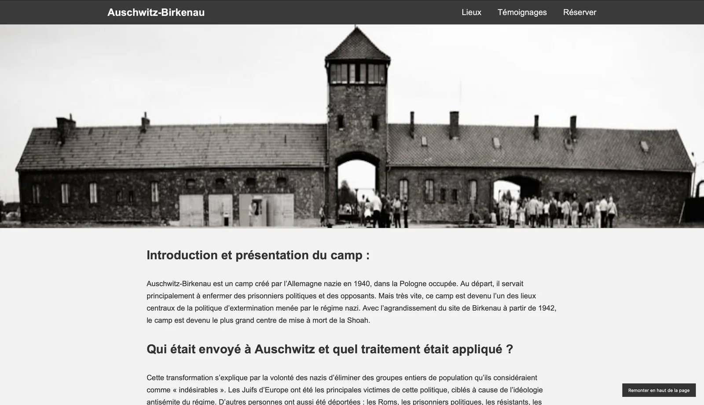
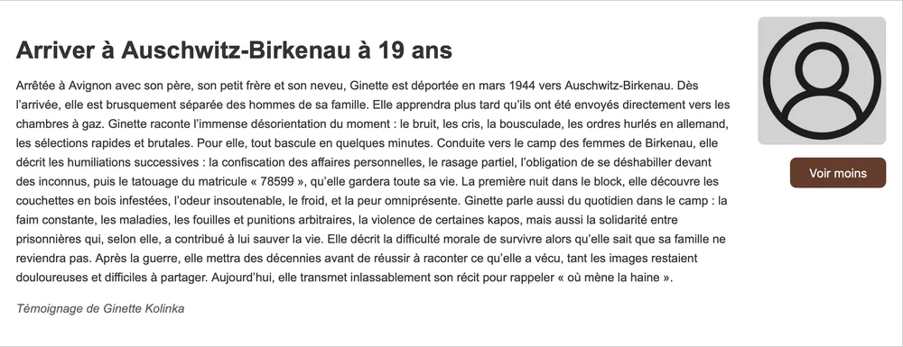
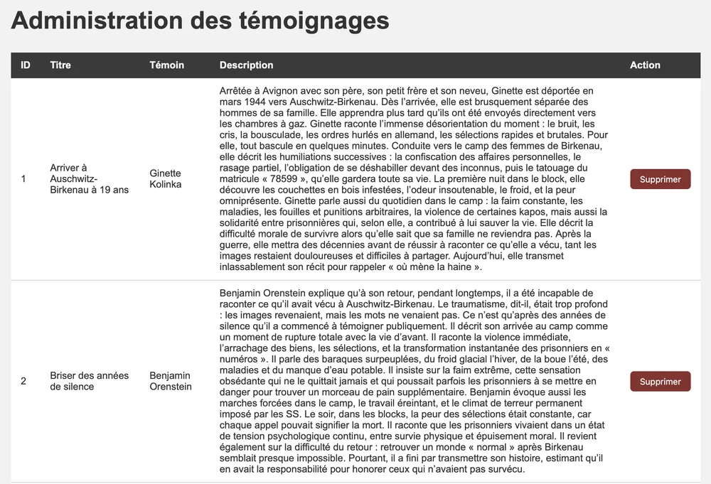
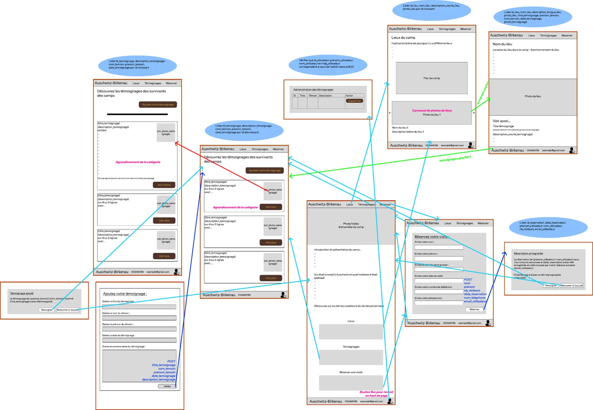

Auschwitz-Birkenau
Site web dynamique relié à une base de données, consacré au lieu de mémoire d’Auschwitz-Birkenau.
- Période
- Mars 2026
- Contexte
- SAÉ 203 · BUT MMI 1re année
- Équipe
- Projet individuel

Le projet
Cette SAÉ demandait de concevoir seul un site web relié à une base de données, pour mettre en avant un lieu réel ou fictif. J’ai choisi de présenter le mémorial d’Auschwitz-Birkenau.
Le site présente les lieux du mémorial, des témoignages, et permet de réserver une visite. Toutes les données sont stockées dans une base de données : on peut les afficher, en ajouter, les modifier ou les supprimer, en partie depuis un espace d’administration. Trois interactions en JavaScript complètent l’expérience.
- 01
Wireframe augmenté
Pages, scripts, requêtes et données échangées
- 02
Modélisation
Modèle entité-association et schéma relationnel
- 03
Développement
HTML, CSS, JavaScript, PHP et SQL
- 04
Mise en ligne
Hébergement et versionnage du code
Ma démarche
J’ai réalisé ce projet seul, en suivant un ordre logique des données jusqu’à leur affichage, et en testant régulièrement chaque partie dynamique :
- Conception : wireframe augmenté décrivant les pages, les interactions et les données utilisées.
- Base de données : modèle entité-association, schéma relationnel puis création de la base (lieux, témoignages, réservations).
- Développement : pages dynamiques en PHP, requêtes SQL et formulaires pour ajouter, modifier ou supprimer des données.
- Interactions : trois interactions en JavaScript, sans bibliothèque, en manipulant directement le DOM.
Les réalisations

Site web
Les lieux, les témoignages et la réservation.

Espace d’administration
Les formulaires pour gérer le contenu.

Modélisation
Le wireframe augmenté et le schéma relationnel.